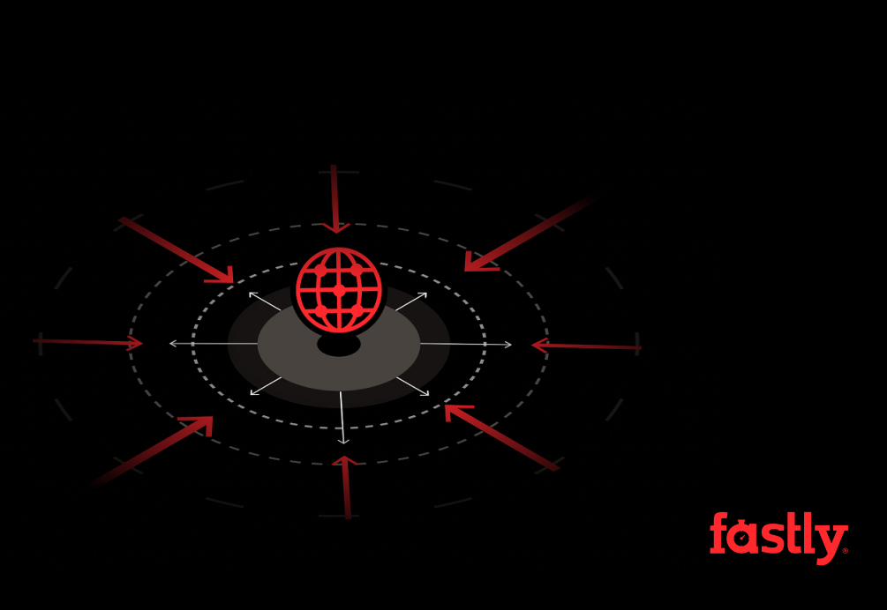
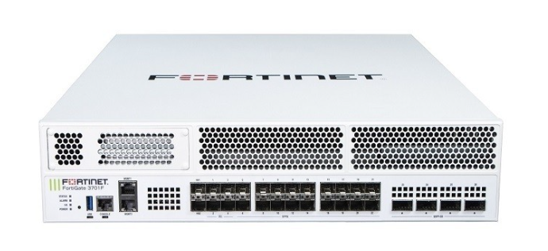

La veille technologique consiste à s'informer de façon systématique sur les innovations les plus récentes et les évolutions de mon futur métier pour anticiper les changements.
J'ai choisi de suivre particulièrement l'impact de l'IA sur l'administration système et les nouvelles menaces cyber.
L'IA transforme notre métier : automatisation de la surveillance réseau, détection d'intrusions (XDR), mais elle offre aussi de nouvelles armes aux attaquants (phishing généré par IA, malwares polymorphes). Il est crucial pour un technicien réseau de s'y préparer.
Pour automatiser la récolte d'informations, j'utilise :
Je consulte régulièrement les plateformes suivantes :
Une sélection de trois articles illustrant l'évolution de l'IA et de son impact sur nos infrastructures.

